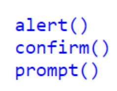

What is the JavaScript
JavaScript introduced three dialog boxes that work well enough for alerting, confirming and prompting for valuesJavaScript, often abbreviated as JS, is a high-level, dynamic, weakly typed, prototype-based, multi-paradigm, and interpreted programming language. Alongside HTML and CSS, JavaScript is one of thethree core technologies of World Wide Web contentproduction. It is used to make webpages interactiveand provide online programs, including video games. The majority of websites employ it, and all modernweb browsers support it without the need for plug-ins by means of a built-inJavaScript engine.